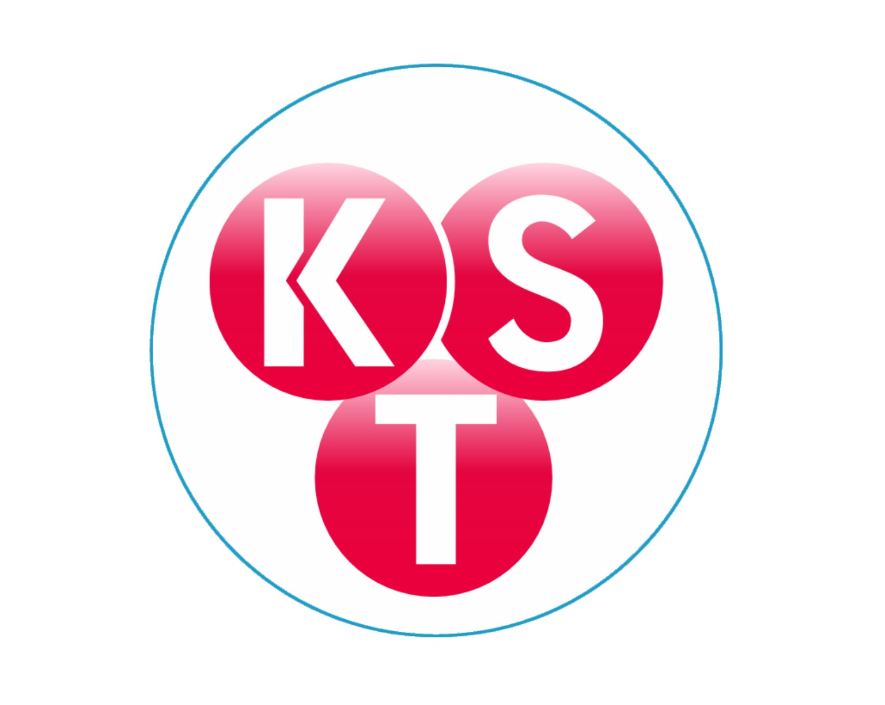

Cắm thiết bị
Dùng cáp USB Type-C có truyền dữ liệu.

KST Robot AIFirmware Center Website hoạt độngKÊNH SÁNG TẠO .COM x Creative Channel
Dành cho ESP32-S3 flash 16MB, màn hình ST7735, cảm biến chống rơi ToF, động cơ, servo và trợ lý giọng nói AI.
Chọn đúng cổng USB Serial của ESP32-S3. Không rút cáp trong lúc nạp.
Dùng cáp USB Type-C có truyền dữ liệu.
Chọn đúng cổng USB Serial/COM của bo mạch.
Đợi đạt 100%, sau đó robot tự khởi động lại.
SƠ ĐỒ ĐẤU NỐI
Ảnh SVG có thể phóng to mà không bị vỡ.

HƯỚNG DẪN
Mic, TTP223, màn hình và ToF dùng 3.3V. Loa MAX98357A và servo dùng nguồn 5V riêng. Tất cả GND phải nối chung.
Không dùng GPIO36 hoặc GPIO37 vì thuộc bus PSRAM nội bộ.
CẤU HÌNH LẦN ĐẦU
KST-Robot-Ai-xxxx.192.168.4.1 nếu trang không tự hiện.KÍCH HOẠT
Nhập mã 6 số trên màn hình tại xiaozhi.me để kích hoạt. Từ khóa đánh thức offline là “Hi Lily”; cũng có thể chạm hai lần TTP223 để bật hoặc tắt trò chuyện.
PHIÊN BẢN
ST7735 + ToF, động cơ DC, servo tay/cổ, Wi-Fi Config, điều khiển LAN và wake-word offline.
SHA-256: 5c6f53d884ffbb19081e585d738447d1ea81b0faa848c4a0e9cc9831bc0b41ec